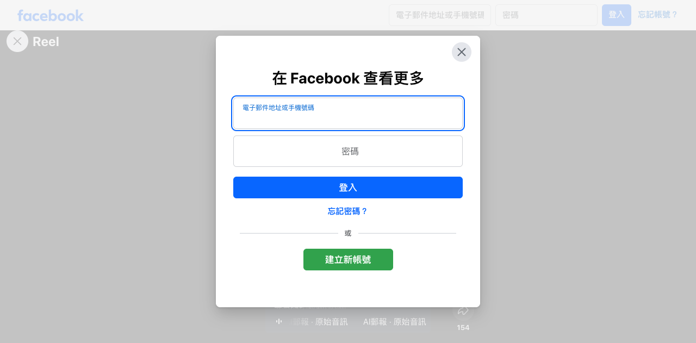

Facebook Reel｜OpenMontage 實測：AI Agent 影片工作室不是一鍵成片，而是可審核的製作管線

重點摘要
這支 AI郵報 Reel 對 **OpenMontage** 的評價是 2.5～3 星。這個分數不等於它沒有價值，反而點出一個更務實的定位：OpenMontage 目前更像一個把「AI coding agent + 多媒體工具 + 品質檢查」編排成工作流的影片製作系統，而非一句話就能放心等交片的全自動影片生成器。
Facebook 的 Reel 本體受登入牆遮蔽，無法直接逐格驗證影片畫面；不過貼文正文、專案 GitHub README 與其公開文件足以交叉確認核心架構。本文把社群實測感受與專案自述分開記錄。
AI郵報的實測觀察（社群主張）
貼文表示它實際以不同 pipeline 製作旅遊短片、文章動畫，並接上 Remotion、Blender 等工具；主要觀察如下：
- **前期設定門檻高**：模型、環境、API 與權限都要先備妥。
- **前製流程有意思**：Agent 會研究題目、找視覺參考、整理腳本與 scene plan，較接近真實影片製作流程。
- **流程規劃不等於輸出穩定**：pipeline 可以完整，但畫面未必會完全照計畫呈現。
- **生成不等於可交件**：字幕、構圖、動畫節奏、字級仍需人工 review。
- 貼文把真正值得研究之處歸納為：`AI Agent → Framework → Tool → 成片`。
貼文也提到本次測試使用具 RTX 5090 Laptop GPU 24GB VRAM、32GB RAM 的筆電，並以此同時承擔 Agent 推理、素材、語音、Remotion render 與 FFmpeg 編碼；這是該次測試環境，不應推論為專案最低硬體需求。
專案公開資料可確認什麼
OpenMontage 的 GitHub README 自稱為「open-source, agentic video production system」，將自然語言影片需求交由 AI coding assistant 執行研究、腳本、素材產生／搜尋、剪輯與最終合成。公開 README 可確認：
- 可搭配 Claude Code、Cursor、Copilot、Windsurf、Codex 等能讀寫檔案、執行指令的 coding assistant。
- 提供多類 production pipelines，例如 Animated Explainer、Animation、Avatar Spokesperson、Cinematic、Clip Factory、Documentary Montage、Hybrid、Localization & Dub、Podcast Repurpose、Screen Demo、Talking Head。
- 共通製作階段為：`research → proposal → script → scene_plan → assets → edit → compose`。
- 專案設計了 Backlot 本機看板與場景級的人工創意核准點；README 宣稱會在生成素材後、render 前暫停，讓人審看聯絡表、prompt、成本與品質分數。
- 合成端包含 Remotion（React scene stack）、HyperFrames（HTML/CSS/GSAP）與 FFmpeg；也能使用 Archive.org、NASA、Wikimedia Commons、Pexels、Unsplash、Pixabay 等來源，走真實素材 montage 路線。
「免費」要怎麼理解
README 提供不加付費 API key 的路徑，例如 Piper TTS、開放檔案庫／素材庫、Remotion、HyperFrames、FFmpeg 與內建字幕。但若要使用特定生圖、生片、雲端語音或商用素材 provider，仍可能需要各家 API key 和用量成本。
因此，最精確的說法是：**OpenMontage 是可用免費工具啟動的開源製作編排系統，不等於所有高品質生成與供應商服務都免費。** 專案 README 本身也用多個有成本的範例說明生成素材、影音供應商與成片費用。
值得借鏡的不是「一鍵影片」，而是製作契約
對要把 AI 放進內容團隊的使用者，OpenMontage 最值得觀察的是以下設計：
- **先選 pipeline，再生成。** 先決定是資料型講解、真實素材紀錄片、產品展示、短片再利用，避免先產一堆素材才發現媒介不對。
- **把中間產物變成可檢查的檔案。** 研究 brief、腳本、scene plan、素材、成本、品質檢查與 render 都應可回溯，而不是只留下最終 MP4。
- **在昂貴步驟前設核准點。** 畫面風格、場景規劃、素材選擇必須先由人確認，降低不必要的生成成本與重工。
- **把「能生成」與「能交付」分開驗收。** 影片要再檢查字幕、音量、比例、版權／授權、視覺一致性、資訊正確性與平台規格。
- **API key 採最小權限。** `.env` 不提交 Git；先用測試專案與有限額度，並逐一確認第三方 provider 的資料、授權與費用政策。
適合先做的低風險試驗
第一次不建議直接做長篇商業片。可選一支 30～45 秒、素材權利清楚的內部教學短片：先讓它提出三種創意方向與成本預估，核准 scene plan 後才允許產生素材；完成後人工檢查旁白、字幕、資訊來源與音樂授權。這樣能量到的，是 pipeline 是否真的能讓團隊少做重複工，而不只是 demo 是否漂亮。
原始連結與來源
- Facebook 分享：https://www.facebook.com/share/r/1Dhtj8mrTS/?mibextid=wwXIfr
- Facebook Reel：https://www.facebook.com/reel/1654380169540707/
- OpenMontage GitHub：https://github.com/calesthio/OpenMontage